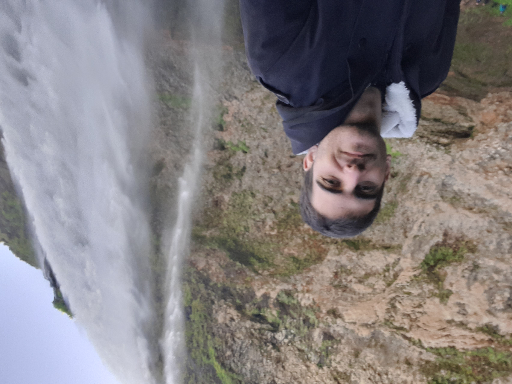

Information:
First Name: Evangelos
Last name: Konstantinidis
Studies: Department of Informatics ,Ionian University
Knowledge:
Programming languages: C, C++, Python, Java, και JavaScript
Web development: HTML, CSS, PHP
Previous Projects:
1. Creation of an application showcasing the menu of the Ionian Uni Restaurant..
2.Development of a MySQL database for the requirements of an airport.
3. Development of a hotel reservation application.
Work Experience
Years of Service: 3 years at a Hotel in Thassos.
About Me:
From a young age, traveling has been one of the greatest sources of inspiration for me. Discovering new places, cultures, and people fills me with joy and a sense of adventure. Another passion of mine is video games. Since my childhood, I entered the world of gaming and found a way to escape from everyday life and explore fantastical worlds.
My photo from a trip to Iceland.
